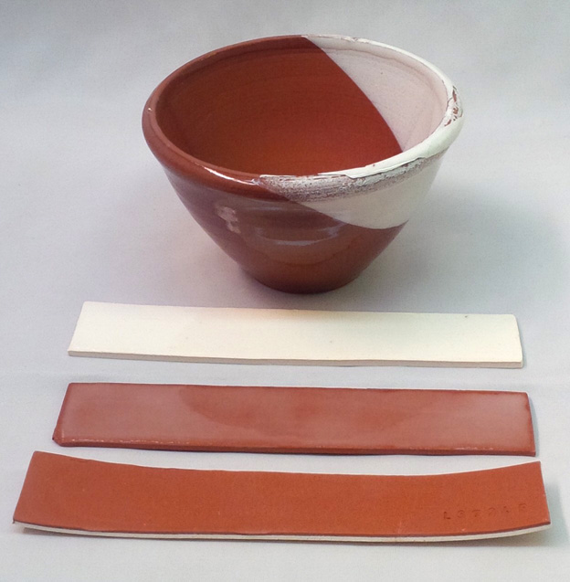
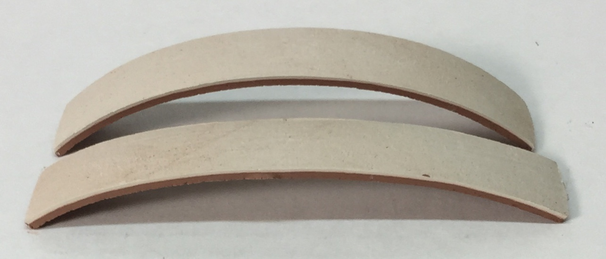
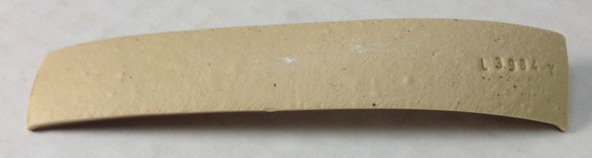
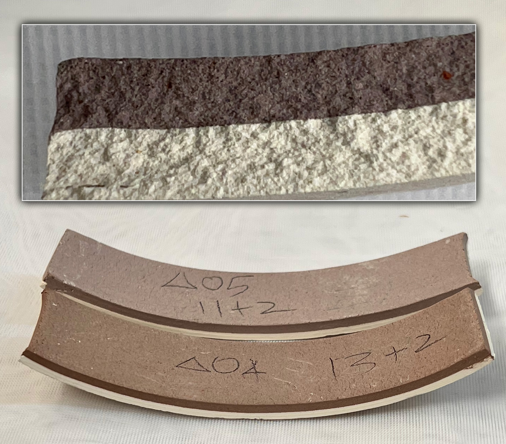

EBCT - Engobe Body Compatibility Test
Engobes need to be as compatible with the body in drying, firing and thermal expansion compatible as possible. Engobes are body-like, they do not melt, they are not glazes. That means they have a less developed interface with the body. Thus it is doubly important to fit them as well as possible to avoid flake-off in response to mechanical or thermal stress (this is serious if it happens on functional ware having a glaze over the engobe). Thousands of tons of engobes are used in the tile industry, understandably it is vital that they fit well.
This test compares the dry and firing shrinkage of a body and engobe. It gives the engobe much more thickness than it would normally have to amplify differences between it and the body. The test is done by preparing, drying and firing multiple bi-clay strips (thin sandwiches of body and engobe) and observing the way they bend during the processes. Extreme bends indicate incompatibility. When fit to a plastic clay body is being tested, the engobe is dewatered and brought to the same stiffness as the body. Then they are individually rolled to slabs of 1/8" thickness, sandwiched and cut into an 8x5 inch size. That slab is then rolled back down to 1/8" thickness. To avoid one side being thinner than the other, the slab should be lightly rolled on one side, turned over and rolled again. Do this repeatedly until the 1/8" thickness is achieved.
Finally, cut bars four bars to 1 x 5.5". Lay two of them with engobe side up and two with body side up. Dry them and measure the amount of warp of each to get an average. Record that. Fire them and repeat the measurements and record.
Ideally, the bars should bend slightly toward the body, putting the engobe under a little compression. That being said, rationalization is sometimes needed when assessing the results. It is possible that, although all measures have been taken to match the firing shrinkages, the bars are still not firing straight. It may still be possible to use the engobe if the bond is demonstrated to be good (it cannot be compromised by breaking the specimens), no residual stresses appear to be present (as indicated by the way the bars shatter on impact), and it will not be applied overly thick on ware.
This test is also appropriate to determine if two bodies are compatible for marbling.
The difference between a slip and an engobe

This picture has its own page with more detail, click here to see it.
L3685U slurry was applied to the insides of both of these mugs. But on the left it is a "slip", on the right an "engobe". Why? The left mug only has a thin layer, applied by painting a gummed version on (at leather hard stage). On the right a gelled slurry was poured into the leather hard piece, poured out and the rim dipped (creating a much thicker layer with more power to impose its own drying and firing shrinkage). So it is much more important that the latter be compatible with the underlying body. The EBCT test is used to measure how compatible the body and engobe are.
Why your supplier does not sell dipping engobes:
#2: They must be tuned to match body fired shrinkage

This picture has its own page with more detail, click here to see it.
The white engobe on the inside of this mug does not fit (in shrinks more than the body during firing), that is what these cracks are about. The misfit can be demonstrated using EBCT test bars (shown in the foreground). This pair sandwich the engobe and body as a bi-clay strip, they are dried and fired with alternative sides up. A bend demonstrates differences in the fired shrinkage of body and engobe. On drying these stayed relatively flat but after firing at cone 10R, the engobe's higher shrinkage pulled them concave. On this mug, made from the same clay and engobe, the latter has done likewise, shrinking more than the body and creating a crack pattern that even the glaze could not hide. This was a development version of L3954N that contained too much nepheline syenite.
Are dipping engobes useful? Incredibly. DIY is the only current way to use them.
Bi-Clay strips test compatibility between engobe and body

This picture has its own page with more detail, click here to see it.
Slips and engobes are fool-proof, right? Just mix the recipe you found on the internet, or that someone else recommends, and you are good to go. Wrong! Low fire slips need to be compatible with the body in two principle ways: drying and firing. Terra cotta bodies have low shrinkage at cone 06-04 (but high at cone 02). The percentage of frit in the engobe determines its firing shrinkage at each of those temperatures. Too much and the engobe is stretched on, too little and it is under compression. The lower the frit the less the glass-bonding with the body and the more chance of flaking if they do fit well (either during the firing or after the customer stresses your product). The engobe also needs to shrink with the body during drying. How can you measure compatibility? Bi-body strips. First I prepare a plastic sample of the engobe. Then I roll 4 mm thick slabs of it and the body, lay them face-to-face and roll that down to 4 mm again. I cut 2.5x12 cm bars and dry and fire them. The curling indicates misfit. This engobe needs more plastic clay (so it dry-shrinks more) and less frit (to shrink less on firing).
How to test if an engobe fits a clay body

This picture has its own page with more detail, click here to see it.
This is part of a project to fit an engobe (slip) onto a terra cotta at cone 02 using the EBCT test.
Left: On drying the red body curls the bi-clay strip toward itself, but on firing it goes the other way!
Right: SHAB test bars of the white slip and red body enable comparing their drying and firing shrinkages.
Center back: A mug with the white engobe and a transparent overglaze. The slip is going translucent under the glaze because it is too vitreous. Its higher fired shrinkage curls the bi-clay bars toward itself. Reducing the frit will reduce the firing shrinkage and make it more opaque (because it will melt less).
Front: A different, more vitreous red body (Zero3 stoneware) fits the slip better (the strips dry and fire straight).
Solving a difficult engobe flaking problem

This picture has its own page with more detail, click here to see it.
This demonstrates the difficulty you can encounter when trying to get an engobe working with a clay body. Here the slip/glaze is flaking off the rim of pieces at cone 04 (does not happen at 06). The front bi-clay bar demonstrates the white and red clays dry well together (the slight curve happened on the drying). They also fire well together (the curvature did not change on firing). The back two thin bars seem to demonstrate thermal expansion compatibility: a thick layer of glaze is not under enough compression to curve either bar during firing. While the white clay contains 15% frit and forms a good bond with the red body, that bond is not nearly as good as the one between the glaze and the white slip. Yet it is still flaking off the rim at the slip/body interface. Why? At first it seemed that failure was happening at quartz inversion (because the body had less quartz than the white slip). However now it appears that the combination of compressions of the slip and glaze are sufficient to break the slip-body bond on concave contours. The compression of the slip and glaze likely did not demonstrate well on the bars because at this low a temperature they are not vitreous enough to be easily curled.
Bi-Clay strips have curled during drying. But there is a problem.

This picture has its own page with more detail, click here to see it.
The front bar was dried with the white engobe upward, the rear one with it downward (an EBCT test). While both have curled toward the red body, the front one has done so less. To enter the results we will average the amount of bend. But there is another problem. During rolling, the white body thinned more and is thus not as thick as the red. Thus there is question about whether the bend is because of this or because of higher shrinkage of the red.
Popular white engobe recipe that does not work at cone 6

This picture has its own page with more detail, click here to see it.
This is Odyssey slip, a engobe recipe that is trafficked on the web. It is recommended for low, medium and high fire ware. It is 30% Ferro Frit 3110 and 70% ball clay. This is a bi-clay strip, a sandwich of two plastic clays rolled into a thin slab and cut into a bar (to make the bar the Odyssey slip was dewatered to typical pottery clay stiffness). We are looking at the engobe side of an EBCT test (the other side is Plainsman M390). During the latter stages of the firing the engobe has begun to melt and blister and darken in color (which it should not be doing). During earlier stages of firing this engobe would certainly have had a higher shrinkage and would have bent the bar its way. But it is now bent the other way. That means the engobe could well be under compression (having a lower thermal expansion than the body). Or the body could simply have pulled it the other way when the engobe lost its rigidity. Either way, the engobe does not fit this body at this temperature.
Is porcelain engobe good on stoneware?
Nope. This demonstrates what happens.

This picture has its own page with more detail, click here to see it.
This is how bad the fit can actually be. In the front is a bi-clay EBCT test strip of a grogged vitreous cone 10R sculpture clay sandwiched with a porcelain. After drying this bar was relatively straight. The back bar bent quite a bit even after bisque. But the bend on the front bar really shows the misfit. But this is not a thermal expansion issue where volume changes are measured in 100ths of a mm - these plastic bodies shrink 5-8% during firing, that is up to 8mm change in these 10cm long cars, that is the kind of volume change needed to make this happen. The porcelain has the higher fired shrinkage so it pulls the bar toward itself. The internal stress makes this bar a time bomb, waiting for a mechanical or thermal trigger to burst it into a hundred pieces. Admittedly, putting a thin layer of this porcelain onto a piece of heavy ware is not going to bend it - but the stresses of the porcelain being stretched-bonded will still be there, seeking relief (likely exhibited by cracking or flaking).
Engobe fit test not what it seems

This picture has its own page with more detail, click here to see it.
These EBCT tests were fired at cone 04 and 05. The brown engobe layer is 2mm thick. These bars dried flat but curled during firing. They demonstrate that, although the body has no glass development, it is able to bend this much without cracking or breaking. Does that mean it has residual stresses within? Apparently not. I dropped these BiClay bars onto cement and they were very strong, bouncing and then breaking into one and three pieces (they would have shattered with high internal stresses present). Breaks that occurred were at right angles. When struck with a hammer angular breaks occurred, but the body-engobe join never failed on any shard. An actual engobe application would be far thinner than to ware made using it should be OK.
White engobe flaking off terra cotta tiles

This picture has its own page with more detail, click here to see it.
Ideally, engobes are applied at leather hard stage. Their body-like makeup enables a plastic bond (#1) and their body-matching fired shrinkage (#2) and COE (#3) maintain that bond through the firing. That being said, many companies turn this logic on end and apply engobes at the bisque stage - where mechanism #1 is missing and they ignore fired fit #2 and #3. An example is terra cotta tile, companies buy it in bisque form, apply the engobe and then a glaze over that. And somehow it works! Or, at least, appears to work. But here is a time it does not. And how often are the tiles flaking time bombs?
How do this company, and others, get away with this most of the time? One secret is initial laydown - This mix is converted to paint by the addition of CMC gum. Second, it is sprayed on in an even and just thick enough layer. Third, 10% frit is added, enough to start melting (usually augmented by high zircon content), this can crowbar adhesion enough. These measures, most of the time, are enough it ignore #2 and #3 and so the item survives firing and light-duty use.
This company does not have the flexibility to do the ideal, they don't make the tile. What can they do? Discover the right balance between adhesion and fired fit. Do EBCT testing by cutting a tile into thin slices, applying the slip and noting the bend. If the fit is way off then start testing using the L3685Z5 recipe, tuning the amount of frit to get best compatibility. Then increasing it until too much opacity is lost or flaking occurs. Then decide on a compromise percentage between bond and fit.
Variables
- Material A (V)BNDR - Bend Dry mm/Toward (V)
Indicate direction of bend and whether toward A or B
- Material B (V)BNFR - Bend Fired mm/Toward (V)
Indicate direction of bend and whether toward A or B
BCON - Cone (V)
Related Information
Videos
Links
| Glossary |
Engobe
Engobes are high-clay slurries that are applied to leather hard or dry ceramics. They fire opaque and are used for functional or decorative purposes. They are formulated to match the firing shrinkage and thermal expansion of the body. |
| Glossary |
Marbling
In ceramics, bodies of different colours can be kneaded together to produce a marble-like result. But caution is needed. |
 PayPal | No tracking, No ads, No paywall, No transient content! Just organized, concise information constantly updated and improved. Was this helpful? Consider supporting me. |
| By Tony Hansen Follow me on        |  |
Got a Question?
Buy me a coffee and we can talk 

https://digitalfire.com, All Rights Reserved
Privacy Policy